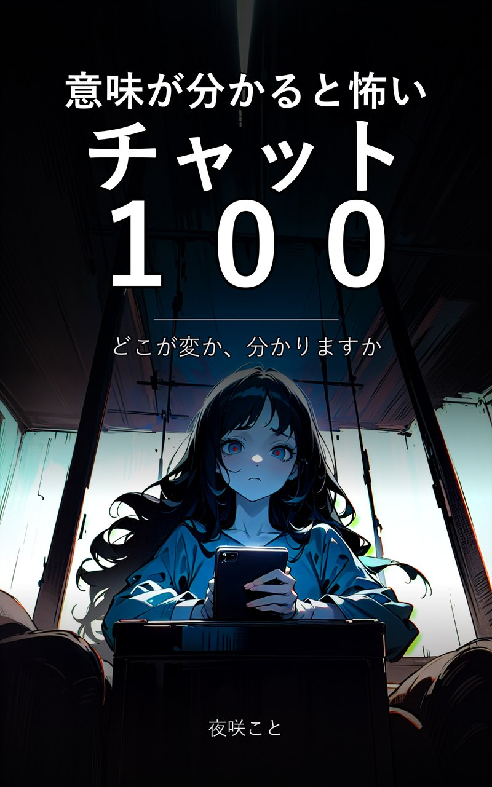

ことちゃんねる 初の書籍
意味が分かると怖いチャット 100
どこが変か、分かりますか。
学校から、職場から、隣の部屋から、家族から、知らない番号から。
どこにでもある100通のやり取り。ただし、どの話にも一箇所だけ、合わないところがあります。
著：夜咲こと ／ Kindle版 ／ 100話収録
Kindleで近日発売収録
- 第1章 学校から届く 連絡網は、いちばん疑われにくい。
- 第2章 職場から届く 業務連絡の顔をして、それは来る。
- 第3章 隣の部屋から 壁の向こうは、思っているより近い。
- 第4章 家族から届く いちばん見慣れた名前が、いちばん怖い。
- 第5章 知らない相手から 番号は知らない。こちらのことは、知っている。
各話のあとに「答え」を置いてあります。先に読んでも構いませんが、できればもう一度だけ、やり取りを上から目で追ってみてください。たいていの場合、おかしいところは最初の数行に、何食わぬ顔で書かれています。
試し読み 第2話「欠席の確認」
本日の欠席確認です。3年2組、欠席1名で承っております8:41
8:43はい、うちの子だけですよね
はい。在籍34名、出席32名、欠席1名です8:44
8:46先生、34から1を引いたら33では
確認します8:47
失礼しました。出席33名でした8:52
8:53了解しました
念のため、席を数え直しました9:10
34名います9:10
9:11え
9:11うちの子は熱で寝てますよ
はい。欠席の1名は空席のままです9:12
それとは別に、34名います9:12
答えを見る
空席は一つ、それでも座っている数が定員ちょうど。教室には本来いないはずの人数が一人ぶん足されている。副担任が最初に間違えた「出席32名」は数え間違いではなく、二度目に数えるまでのあいだに、席が一つ埋まったということ。
著者
夜咲こと。「意味が分かると怖い話」をチャット画面の形で毎日配信しています。この本は、実際に届けた数百の話のうち、読んだ人が怖いと言ったものだけを並べ直したものです。